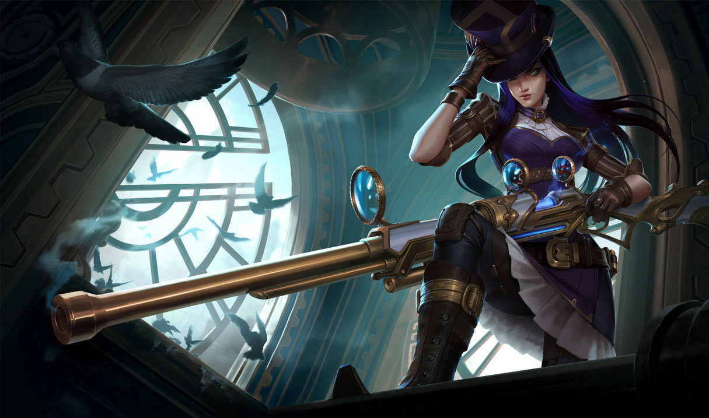
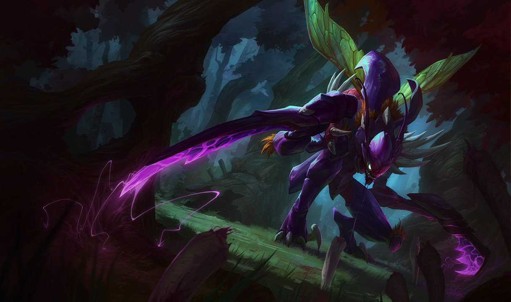
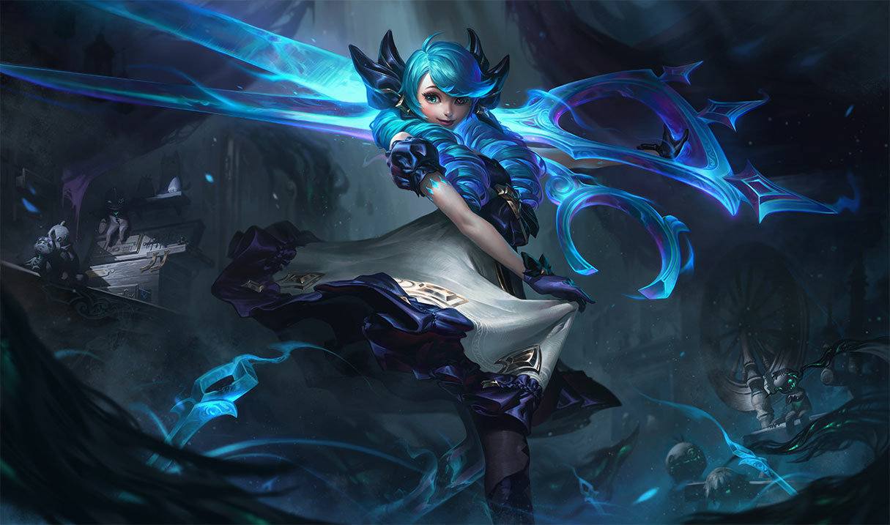

La Botlane est la voie du bas, c’est la seule voie où 2 duos
s’affrontent.
ADC
Le carry AD est un tireur à distance qui se caractérise par sa fragilité et son potentiel de dégâts. Faible au début de la partie, il doit prendre le plus de ressources possible dans les premières phases de jeu pour ensuite infliger de gros dégâts.
Personnage “squishy” (très fragile), il est accompagné d’un Support qui lui permet de prendre des ressources en toute sérénité.
Plus la partie avance, plus son rôle est important et de nombreuses compositions d’équipes jouent autour de leur ADC.
Exemples types d’ADC
Ashe
Chef de guerre sublimé de la tribu des Avarosans, Ashe est à la tête de la plus vaste horde des terres du nord. Stoïque, intelligente et idéaliste, mais mal à l'aise dans son rôle de leader, elle puise dans la magie ancestrale de sa lignée pour manier un arc de glace pure. Soutenue par son peuple qui voit en elle la réincarnation de la légendaire héroïne Avarosa, Ashe cherche à unifier Freljord en reprenant les terres tribales.

Caitlyn
Caitlyn est la plus célèbre gardienne de la paix à Piltover, mais elle est aussi la plus apte à débarrasser la ville de ses criminels les plus insaisissables. Elle fait souvent équipe avec Vi, son calme faisant contrepoids à la fougue de sa partenaire. Bien qu'elle porte un fusil Hextech unique en son genre, la meilleure arme de Caitlyn reste son intelligence ; elle invente en effet des pièges élaborés pour attraper les bandits qui auraient l'audace d'agir dans la Cité du progrès.
Lucian
Jadis une Sentinelle de la lumière, Lucian est aujourd'hui un chasseur de morts-vivants. Il poursuit ses cibles sans répit et les éradique avec ses pistolets jumeaux. Après que Thresh a tué Senna, sa femme, Lucian s'est lancé sur la voie de la vengeance. Mais, alors même que Senna est revenue à la vie, la rage de Lucian reste inextinguible. Impitoyable et déterminé, il est prêt à tout pour protéger les vivants des horreurs indicibles de la Brume noire.
SUPPORT
Pourrait se décrire en un seul mot : Abnégation. (ou KS si on est Janel sur Morgana)
Le support est un rôle de soutien, il prend un minimum de ressources et vise plutôt à les donner
à son ADC. Le support remplit de nombreuses missions sur la map, il est en charge de la vision,
de la sécurisation d’objectifs et est amené à changer de lane pour apporter de l’aide où il y a
besoin.
Le type de personnages qui se joue à ce rôle est varié, pouvant aller du Tank absorbeur de
dégats à l’Enchanteur, apportant contrôle et avantages à ses alliés
Exemples de support
Lulu (enchanteur)
Magicienne yordle, Lulu aime conjurer des illusions oniriques et de drôles de créatures en explorant Runeterra avec Pix, sa fée de compagnie. Lulu forge la réalité selon ses désirs, modifiant à sa guise la structure du monde et ce qu'elle considère comme les contraintes physiques d'un univers sans saveur. Beaucoup pensent que sa magie n'est pas naturelle, pour ne pas dire dangereuse, mais elle estime qu'un peu d'enchantement ne peut faire de mal à personne.
Nautilus (tank)
Nautilus, une légende plus ancienne encore que la première jetée de Bilgewater, est un titan en armure qui sillonne les eaux sombres au large des Îles de la Flamme Bleue. Trahi il y a bien longtemps de cela, il frappe désormais sans prévenir, se servant de son ancre gigantesque pour sauver les malheureux et couler les avares. On raconte qu'il vient chercher ceux qui oublient de payer le « tribut de Bilgewater » et qu'il les emmène avec lui au fond des mers, d'où nul ne peut s'échapper.
Rakan (contrôle)
Jadis une Sentinelle de la lumière, Lucian est aujourd'hui un chasseur de morts-vivants. Il poursuit ses cibles sans répit et les éradique avec ses pistolets jumeaux. Après que Thresh a tué Senna, sa femme, Lucian s'est lancé sur la voie de la vengeance. Mais, alors même que Senna est revenue à la vie, la rage de Lucian reste inextinguible. Impitoyable et déterminé, il est prêt à tout pour protéger les vivants des horreurs indicibles de la Brume noire.
JUNGLE
Sur la carte, entre les 3 lanes se trouve une jungle avec des camps de monstres. Le jungler est
la personne qui va prendre ses ressources dans la jungle uniquement. Il bat les camps de
monstres de la jungle, puis va apporter son soutien aux lanes qui en ont besoin.
Il est également responsable des objectifs communs aux deux équipes, comme la prise du
Dragon ou du Baron Nashor. Il est d’ailleurs le seul à utiliser le sort “Smite”, qui inflige
d’énormes dégâts aux monstres uniquement (pas aux autres joueurs).
Rôle pouvant être très polyvalent, on peut retrouver différents types de personnages dans la
jungle.
Les plus communs sont les Tanks, les Combattants ou les Assassins.
Exemples de jungle
Rammus (tank)
Beaucoup l'idolâtrent, certains le méprisent, mais tous restent perplexes devant l'énigmatique Rammus. Protégé par une carapace cloutée, il inspire des théories de plus en plus variées sur ses origines : demi-dieu, oracle, simple bête transformée par la magie... Quelle que soit la vérité, Rammus n'est pas très bavard et ne s'arrête pour personne tandis qu'il parcourt le désert de Shurima.
Viego (combattant)
Autrefois souverain d'un royaume perdu depuis longtemps, Viego mourut il y a plus de mille ans lorsqu'il tenta de ramener sa femme d'entre les morts. Cela causa la catastrophe magique connue sous le nom de la Ruine. Devenu un puissant spectre torturé par le désir obsessionnel de retrouver sa reine morte depuis des siècles, Viego est désormais le Roi déchu. Il contrôle la Nuit de l'horreur et parcourt Runeterra pour trouver un moyen de ramener sa bien-aimée, détruisant tout sur son passage avec la Brume noire qui se répand inlassablement depuis son cœur brisé et cruel.

Kha’Zix (assassin)
Le Néant grandit et le Néant s'adapte : parmi ses nombreuses engeances, nul n'incarne mieux cette vérité que Kha'Zix. Ce monstre est né pour survivre et pour tuer les plus forts. Quand il ne parvient pas à ses fins, il évolue et se crée de nouveaux moyens plus efficaces d'abattre sa proie. Alors que Kha'Zix n'était à l'origine qu'une créature sans cervelle, son intelligence s'est développée autant que sa forme physique. Aujourd'hui, chacune de ses traques est planifiée et profite même de la peur viscérale qu'il instille dans le cœur de ses victimes.
MIDLANE
C’est la voie du milieu, située au centre de la map. Généralement, les personnages qui y sont
joués sont des mages, possédant de bons dégâts et une bonne portée. A l’instar de l’ADC, le
midlaner est souvent un des Damage Dealers de son équipe.
L’autre catégorie la plus répandue de midlaners est les Assassins. Personnages forts en duel, ils
sont désignés pour fondre sur les personnages squishy et les tuer.
Le midlaner est le laner qui est le plus amené à bouger de sa lane. Certains sont même
spécialisés dans cet aspect du jeu : le roaming.
Ils peuvent se déplacer sur une autre lane pour essayer de tuer un ennemi et ainsi prendre un
avantage sur l’équipe adverse
Exemples de midlane
Lux (mage dégâts)
Luxanna Crownguard est originaire de Demacia, un royaume isolationniste où la magie inspire la peur et la méfiance. Capable de plier la lumière à sa volonté, elle a grandi dans la crainte d'être un jour exilée et a été contrainte de dissimuler son pouvoir pour préserver l'honneur de sa famille. Cependant, l'optimisme et la ténacité de Lux l'ont conduite à accepter ses talents uniques, et elle les emploie désormais secrètement pour le bénéfice de sa patrie.
Orianna (mage contrôle)
Autrefois une jeune fille curieuse, de chair et d'os, Orianna est aujourd'hui une merveille de technologie entièrement mécanisée. Elle est tombée gravement malade à la suite d'un accident dans les quartiers inférieurs de Zaun, et son corps défaillant a été remplacé petit à petit par des prothèses perfectionnées. Accompagnée par une sphère extraordinaire qu'elle a elle-même créée pour lui servir de compagnon et de protectrice, Orianna est désormais libre d'explorer la merveilleuse ville de Piltover et ce qui se trouve au-delà.
Zed (assassin)
L'impitoyable Zed est le maître de l'Ordre de l'ombre, une organisation qu'il a créée dans l'intention de militariser la tradition des arts martiaux d'Ionia et de chasser enfin les envahisseurs noxiens. Pendant la guerre, le désespoir le conduisit à déchaîner la Forme secrète de l'ombre, un puissant esprit maléfique aussi dangereux que corrompu. Si Zed maîtrise ces techniques interdites, c'est pour détruire tout ce qu'il considère comme une menace contre sa nation ou son ordre.
TOPLANE
Tout en haut de la carte, le duel entre toplaners est souvent assez solitaire. Souvent, le choix du
personnage joué est motivé par le plan de jeu de l’équipe. Par exemple, si on a des gros dégâts
en botlane midlane et jungle, on va chercher à avoir un Tank au top.
Le but du toplaner est d’être meilleur que son vis-à-vis sur la prise de ressources, et d’assister
le jungler dans la prise d’objectifs proches de la toplane (Herald, Baron Nashor etc.)
Les personnages les plus joués en toplane sont des Tanks ou des Combattants, personnages
plutôt résistants, ne craignant pas l’affrontement.
Exemples de toplane
Garen (combattant ou tank )
Garen est un guerrier fier et noble qui fait partie du Détachement hardi. Héritier des Crownguard, la famille chargée de défendre Demacia et ses idéaux, il est apprécié par ses compatriotes et respecté par ses ennemis. Équipé d'une armure résistante à la magie et d'une épée large, Garen affronte sans faillir les mages et les sorciers dans un véritable tourbillon d'acier.
Ksante (tank)
Rebelle et courageux, K'Santé combat les bêtes colossales et les Transfigurés impitoyables qui menacent son foyer convoité de Nazumah, une oasis lovée au cœur des sables de Shurima. Après s'être séparé de son ancien partenaire, K'Santé comprend que pour devenir un guerrier digne de diriger sa ville, il doit apprendre à brider son désir de victoire qui vire à l'obsession. Ce n'est qu'à ce prix qu'il pourra éviter les écueils de son propre orgueil et trouver en lui la sagesse nécessaire à la protection de son peuple.

Gwen (combattant à gros dégâts)
Ancienne poupée à qui la magie a conféré la vie, Gwen est armée des outils qui l'ont créée. Elle emporte à chaque pas l'amour de sa créatrice et ne tient jamais rien pour acquis. Elle commande à la Brume sacrée, une ancienne magie de protection qui a béni ses ciseaux, ses aiguilles et son fil à coudre. Tout est nouveau pour Gwen, mais elle reste déterminée à combattre dans la joie pour préserver le bien qui survit dans un monde en déréliction.
.svg)